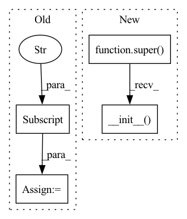

Pattern ID :215
Before Change
def __init__(self, config):
self.topk = config["topk"]
self.decimal_place = config["metric_decimal_place"]
def used_info(self, dataobject):
get the matrix of recommendation items and number of items in total item set
item_matrix = dataobject.get("rec.items")After Change
\mathrm{Coverage@K}=\frac{\left| \bigcup_{u \in U} \hat{R}(u) \right|}{|I|}
def __init__(self, config):
super().__init__( config)
self.topk = config["topk"]
def used_info(self, dataobject):
Get the matrix of recommendation items and number of items in total item setIn pattern: SUPERPATTERN
Frequency: 16
Non-data size: 4
Instances Fragment ID: 1679185
Project Name: rucaibox/recbole
Commit Name: b1dc219667135b87960339369293240dc6f92d54
Time: 2021-08-03
Author: 970955517@qq.com
File Name: recbole/evaluator/metrics.py
M Class Name: ItemCoverage
N Class Name: ItemCoverage
M Method Name: __init__(2)
N Method Name: __init__(2)
M Parent Class: AbstractMetric
N Parent Class: object
M File Name: recbole/evaluator/metrics.py
N File Name: recbole/evaluator/metrics.py
M Start Line: 409
M End Line: 409
N Start Line: 431
N End Line: 431
Before Change
self.y_train = y_train
self.X_valid = X_valid
self.y_valid = y_valid
self.batch_size = kwargs["batch_size"]
self.kwargs = kwargs
self._setup_datasets()
def _setup_datasets(self):After Change
class FedDataset(DataInterface):
def __init__(self, train_bs, valid_bs, **kwargs):
super().__init__(**kwargs)
self.train_bs = train_bs
self.valid_bs = valid_bs
@property Fragment ID: 1679184
Project Name: intel/openfl
Commit Name: 4f481319b781690e9e6d952a7760a2a74eb931f8
Time: 2021-08-24
Author: ilya.trushkin@intel.com
File Name: tests/github/interactive_api_director/experiments/tensorflow_mnist/dataset.py
M Class Name: FedDataset
N Class Name: FedDataset
M Method Name: __init__(3)
N Method Name: __init__(5)
M Parent Class: DataInterface
N Parent Class: DataInterface
M File Name: tests/github/interactive_api_director/experiments/tensorflow_mnist/dataset.py
N File Name: tests/github/interactive_api_director/experiments/tensorflow_mnist/dataset.py
M Start Line: 7
M End Line: 14
N Start Line: 9
N End Line: 9
Before Change
def __init__(self, config):
self.decimal_place = config["metric_decimal_place"]
def used_info(self, dataobject):
get scores that model predicted and the ground truth
preds = dataobject.get("rec.score")After Change
config (Config): The config of evaluator.
def __init__(self, config):
super().__init__( config)
def used_info(self, dataobject):
Get scores that model predicted and the ground truth.
preds = dataobject.get("rec.score") Fragment ID: 1679186
Project Name: rucaibox/recbole
Commit Name: d459ec645e4da78c910cf4d8bd70af42ddbd945f
Time: 2021-08-03
Author: 970955517@qq.com
File Name: recbole/evaluator/base_metric.py
M Class Name: LossMetric
N Class Name: LossMetric
M Method Name: __init__(2)
N Method Name: __init__(2)
M Parent Class: AbstractMetric
N Parent Class: object
M File Name: recbole/evaluator/base_metric.py
N File Name: recbole/evaluator/base_metric.py
M Start Line: 55
M End Line: 55
N Start Line: 97
N End Line: 97
Before Change
def __init__(self, config):
self.topk = config["topk"]
self.decimal_place = config["metric_decimal_place"]
self.tail = config["tail_ratio"]
if self.tail is None or self.tail <= 0:
self.tail = 0.1
After Change
which can be an integer or a float in (0,1]. Otherwise it will default to 0.1.
def __init__(self, config):
super().__init__( config)
self.topk = config["topk"]
self.tail = config["tail_ratio"]
if self.tail is None or self.tail <= 0:
self.tail = 0.1 Fragment ID: 1679177
Project Name: rucaibox/recbole
Commit Name: b1dc219667135b87960339369293240dc6f92d54
Time: 2021-08-03
Author: 970955517@qq.com
File Name: recbole/evaluator/metrics.py
M Class Name: TailPercentage
N Class Name: TailPercentage
M Method Name: __init__(2)
N Method Name: __init__(2)
M Parent Class: AbstractMetric
N Parent Class:
M File Name: recbole/evaluator/metrics.py
N File Name: recbole/evaluator/metrics.py
M Start Line: 592
M End Line: 592
N Start Line: 650
N End Line: 650
Before Change
self.cut_method = ["ceil", "floor", "around"]
self.LABEL_FIELD = config["LABEL_FIELD"]
self.USER_FIELD = config["USER_ID_FIELD"]
self.ITEM_FIELD = config["ITEM_ID_FIELD"]
self.metric_cols = ["score", self.LABEL_FIELD]
def cutoff(self, df, col, method):After Change
class LossEvaluator(BaseLossEvaluator):
def __init__(self, config, logger):
super(LossEvaluator, self).__init__( config, logger)
def evaluate(self, true_scores, pred_scores):
evalaute the loss metrics
Fragment ID: 1679176
Project Name: rucaibox/recbole
Commit Name: e2a7ad867dc7f7ba919fbca18dfbbf3b03481a2e
Time: 2020-08-02
Author: 1337990880@qq.com
File Name: evaluator/evaluator.py
M Class Name: LossEvaluator
N Class Name: LossEvaluator
M Method Name: __init__(3)
N Method Name: __init__(4)
M Parent Class: BaseLossEvaluator
N Parent Class: AbstractEvaluator
M File Name: evaluator/evaluator.py
N File Name: evaluator/evaluator.py
M Start Line: 155
M End Line: 163
N Start Line: 14
N End Line: 14
Before Change
self.foz_dir = os.path.abspath(foz_dir)
self.raw_annotations = self._get_raw_annotations()
self.taxonomy = self.raw_annotations["taxonomy"]
self.all_classes = self.get_all_classes(self.taxonomy)
self._splitwise_sample_ids = self._parse_sample_ids()
self.all_sample_ids = _flatten_list(After Change
self.foz_dir = os.path.abspath(foz_dir)
self._split_infos = {}
self.raw_annotations = self._get_raw_annotations()
super().__init__( self.raw_annotations)
self.update_existing_sample_ids()
def split_info(self, split): Fragment ID: 1679179
Project Name: voxel51/fiftyone
Commit Name: 5de7d509b517e80ce9df96d7b3ddc5b842a936b7
Time: 2022-01-27
Author: ehofesmann@gmail.com
File Name: fiftyone/utils/activitynet.py
M Class Name: ActivityNetDatasetInfo
N Class Name: ActivityNetDatasetInfo
M Method Name: __init__(2)
N Method Name: __init__(2)
M Parent Class: ActivityNetInfo
N Parent Class: object
M File Name: fiftyone/utils/activitynet.py
N File Name: fiftyone/utils/activitynet.py
M Start Line: 758
M End Line: 765
N Start Line: 955
N End Line: 957
Before Change
def __init__(self, config):
self.topk = config["topk"]
self.decimal_place = config["metric_decimal_place"]
def used_info(self, dataobject):
get the matrix of recommendation items and number of items in total item set
item_matrix = dataobject.get("rec.items")After Change
which is indexed in non-decreasing order (P_{(i)} \leq P_{(i+1)}).
def __init__(self, config):
super().__init__( config)
self.topk = config["topk"]
def used_info(self, dataobject):
Get the matrix of recommendation items and number of items in total item set Fragment ID: 1679178
Project Name: rucaibox/recbole
Commit Name: b1dc219667135b87960339369293240dc6f92d54
Time: 2021-08-03
Author: 970955517@qq.com
File Name: recbole/evaluator/metrics.py
M Class Name: GiniIndex
N Class Name: GiniIndex
M Method Name: __init__(2)
N Method Name: __init__(2)
M Parent Class: AbstractMetric
N Parent Class: object
M File Name: recbole/evaluator/metrics.py
N File Name: recbole/evaluator/metrics.py
M Start Line: 545
M End Line: 545
N Start Line: 594
N End Line: 594
Before Change
def __init__(self, wikipedia_id):
self.wikipedia_id = wikipedia_id
ks = KnowledgeSource()
self.wikidata_id = ks.get_page_by_id(self.wikipedia_id)["wikidata_info"]["wikidata_id"]
def get_1step_adjoin_entity(self, online=False):
if(online==True):
sparql_query = After Change
class WikidataSearcher(BaseSearcher):
def __init__(self):
super().__init__()
self.ks = KnowledgeSource()
def search_for_entity(self, wikipedia_id, step_num, result_num=2):
Fragment ID: 1679181
Project Name: cognlp/cogktr
Commit Name: 964bf79b59a65486774561d01c384f8880646e91
Time: 2022-06-30
Author: zhouyuyang17@163.com
File Name: cogktr/enhancers/searcher/wikidata_searcher.py
M Class Name: WikidataSearcher
N Class Name: WikidataSearcher
M Method Name: __init__(1)
N Method Name: __init__(2)
M Parent Class: BaseSearcher
N Parent Class: BaseSearcher
M File Name: cogktr/enhancers/searcher/wikidata_searcher.py
N File Name: cogktr/enhancers/searcher/wikidata_searcher.py
M Start Line: 13
M End Line: 16
N Start Line: 11
N End Line: 12
Before Change
def __init__(self, config):
self.metrics = config["metrics"]
self.label_field = config["LABEL_FIELD"]
self._check_args()
After Change
def __init__(self, config):
super().__init__( config)
self.label_field = config["LABEL_FIELD"]
self._check_args()
Fragment ID: 1679180
Project Name: rucaibox/recbole
Commit Name: cb17c9bfee16863428f9c7795bd5ad31ccb01245
Time: 2020-10-07
Author: 1337990880@qq.com
File Name: recbox/evaluator/loss_evaluator.py
M Class Name: LossEvaluator
N Class Name: LossEvaluator
M Method Name: __init__(2)
N Method Name: __init__(2)
M Parent Class: AbstractEvaluator
N Parent Class: object
M File Name: recbox/evaluator/loss_evaluator.py
N File Name: recbox/evaluator/loss_evaluator.py
M Start Line: 33
M End Line: 33
N Start Line: 33
N End Line: 33
Before Change
def __init__(self, config):
self.topk = config["topk"]
self.decimal_place = config["metric_decimal_place"]
def used_info(self, dataobject):
get the matrix of recommendation items and the popularity of items in training data
item_counter = dataobject.get("data.count_items")After Change
:math:`\phi(i)` is the number of interaction of item i in training data.
def __init__(self, config):
super().__init__( config)
self.topk = config["topk"]
def used_info(self, dataobject):
Get the matrix of recommendation items and the popularity of items in training data Fragment ID: 1679183
Project Name: rucaibox/recbole
Commit Name: b1dc219667135b87960339369293240dc6f92d54
Time: 2021-08-03
Author: 970955517@qq.com
File Name: recbole/evaluator/metrics.py
M Class Name: AveragePopularity
N Class Name: AveragePopularity
M Method Name: __init__(2)
N Method Name: __init__(2)
M Parent Class: AbstractMetric
N Parent Class:
M File Name: recbole/evaluator/metrics.py
N File Name: recbole/evaluator/metrics.py
M Start Line: 449
M End Line: 449
N Start Line: 474
N End Line: 474
Before Change
class SocialDataset(Dataset):
def __init__(self, config, saved_dataset=None):
self.config = config
self.dataset_name = config["dataset"]
self.logger = getLogger()
if saved_dataset is None:
self._from_scratch(config)After Change
class SocialDataset(Dataset):
def __init__(self, config, saved_dataset=None):
super().__init__( config, saved_dataset=saved_dataset)
def _from_scratch(self, config):
self.logger.debug("Loading social dataset from scratch")
Fragment ID: 1679182
Project Name: rucaibox/recbole
Commit Name: a3c93b25b198de14194a122f0237b704895b68f0
Time: 2020-09-21
Author: 297086016@qq.com
File Name: recbox/data/dataset/social_dataset.py
M Class Name: SocialDataset
N Class Name: SocialDataset
M Method Name: __init__(3)
N Method Name: __init__(3)
M Parent Class: Dataset
N Parent Class: Dataset
M File Name: recbox/data/dataset/social_dataset.py
N File Name: recbox/data/dataset/social_dataset.py
M Start Line: 22
M End Line: 31
N Start Line: 21
N End Line: 21
Before Change
super().__init__(expected_inputs, hook, **kwargs)
if self.global_config is not None:
self.output_folder = self.global_config["output_folder"]
self.reshape = False
def forward(self, x):After Change
do_recovery=True,
output_folder=None
):
super().__init__()
self.rnn_type = rnn_type
self.n_neurons = n_neurons
self.nonlinearity = nonlinearity,
self.num_layers = num_layers Fragment ID: 1679169
Project Name: speechbrain/speechbrain
Commit Name: 7d00e5ec3034142a20ceb7b2aa48d81ad465d20e
Time: 2020-03-27
Author: plantinga.peter@gmail.com
File Name: speechbrain/nnet/architectures.py
M Class Name: RNN_basic
N Class Name: RNN_basic
M Method Name: __init__(11)
N Method Name: __init__(9)
M Parent Class: torch.nn.Module
N Parent Class: SpeechBrainModule
M File Name: speechbrain/nnet/architectures.py
N File Name: speechbrain/nnet/architectures.py
M Start Line: 1511
M End Line: 1601
N Start Line: 1467
N End Line: 1553
Before Change
def __init__(self, config):
self.decimal_place = config["metric_decimal_place"]
def calculate_metric(self, dataobject):
meanrank = dataobject.get("rec.meanrank")
meanrank = meanrank.numpy()After Change
:math:`rank_i` is the descending rank of the i-th items in :math:`R(u)`.
def __init__(self, config):
super().__init__( config)
def calculate_metric(self, dataobject):
mean_rank = dataobject.get("rec.meanrank").numpy()
pos_rank_sum, user_len_list, pos_len_list = np.split(mean_rank, 3, axis=1) Fragment ID: 1679171
Project Name: rucaibox/recbole
Commit Name: b1dc219667135b87960339369293240dc6f92d54
Time: 2021-08-03
Author: 970955517@qq.com
File Name: recbole/evaluator/metrics.py
M Class Name: GAUC
N Class Name: GAUC
M Method Name: __init__(2)
N Method Name: __init__(2)
M Parent Class: AbstractMetric
N Parent Class: object
M File Name: recbole/evaluator/metrics.py
N File Name: recbole/evaluator/metrics.py
M Start Line: 234
M End Line: 234
N Start Line: 249
N End Line: 249
Before Change
def __init__(self, config):
self.topk = config["topk"]
self.metrics = config["metrics"]
self._check_args()
def evaluate(self, interaction, scores_tensor, full=False):After Change
def __init__(self, config):
super().__init__( config)
self.topk = config["topk"]
self._check_args()
Fragment ID: 1679170
Project Name: rucaibox/recbole
Commit Name: cb17c9bfee16863428f9c7795bd5ad31ccb01245
Time: 2020-10-07
Author: 1337990880@qq.com
File Name: recbox/evaluator/topk_evaluator.py
M Class Name: TopKEvaluator
N Class Name: TopKEvaluator
M Method Name: __init__(2)
N Method Name: __init__(2)
M Parent Class: AbstractEvaluator
N Parent Class: object
M File Name: recbox/evaluator/topk_evaluator.py
N File Name: recbox/evaluator/topk_evaluator.py
M Start Line: 33
M End Line: 33
N Start Line: 33
N End Line: 33
Before Change
def __init__(self, config):
self.topk = config["topk"]
self.decimal_place = config["metric_decimal_place"]
def used_info(self, dataobject):
get the bool matrix indicating whether the corresponding item is positive
rec_mat = dataobject.get("rec.topk")After Change
config (Config): The config of evaluator.
def __init__(self, config):
super().__init__( config)
self.topk = config["topk"]
def used_info(self, dataobject):
Get the bool matrix indicating whether the corresponding item is positive. Fragment ID: 1679172
Project Name: rucaibox/recbole
Commit Name: d459ec645e4da78c910cf4d8bd70af42ddbd945f
Time: 2021-08-03
Author: 970955517@qq.com
File Name: recbole/evaluator/base_metric.py
M Class Name: TopkMetric
N Class Name: TopkMetric
M Method Name: __init__(2)
N Method Name: __init__(2)
M Parent Class: AbstractMetric
N Parent Class: object
M File Name: recbole/evaluator/base_metric.py
N File Name: recbole/evaluator/base_metric.py
M Start Line: 28
M End Line: 28
N Start Line: 48
N End Line: 48
Before Change
def __init__(self, config):
self.topk = config["topk"]
self.decimal_place = config["metric_decimal_place"]
def used_info(self, dataobject):
get the matrix of recommendation items.
item_matrix = dataobject.get("rec.items")After Change
which is the number of item i in recommended list over all items.
def __init__(self, config):
super().__init__( config)
self.topk = config["topk"]
def used_info(self, dataobject):
Get the matrix of recommendation items. Fragment ID: 1679174
Project Name: rucaibox/recbole
Commit Name: b1dc219667135b87960339369293240dc6f92d54
Time: 2021-08-03
Author: 970955517@qq.com
File Name: recbole/evaluator/metrics.py
M Class Name: ShannonEntropy
N Class Name: ShannonEntropy
M Method Name: __init__(2)
N Method Name: __init__(2)
M Parent Class: AbstractMetric
N Parent Class:
M File Name: recbole/evaluator/metrics.py
N File Name: recbole/evaluator/metrics.py
M Start Line: 502
M End Line: 502
N Start Line: 543
N End Line: 543